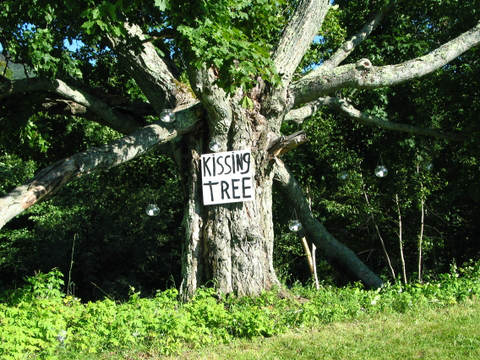
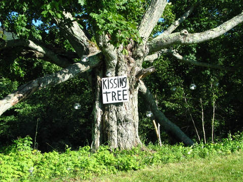

City Article:
Franklin attracts visitors for annual Kissing Tree Convention
 

Kissing Tree - The Spencer Lee Band
[Chorus]
Girl, just come with me
Feel your fantasy
I want to see you underneath this old kissing tree
Hold my hand, sweet love
Bless the stars above
I want to see you underneath this old kissing tree
[Verse 1]
Hey, pretty lady
You better tell your friend
That you'll be my baby
Until the very end
You know you got that formula
You know you got that drug
Know you got that kinda thing
Only a man can love
[Chorus]